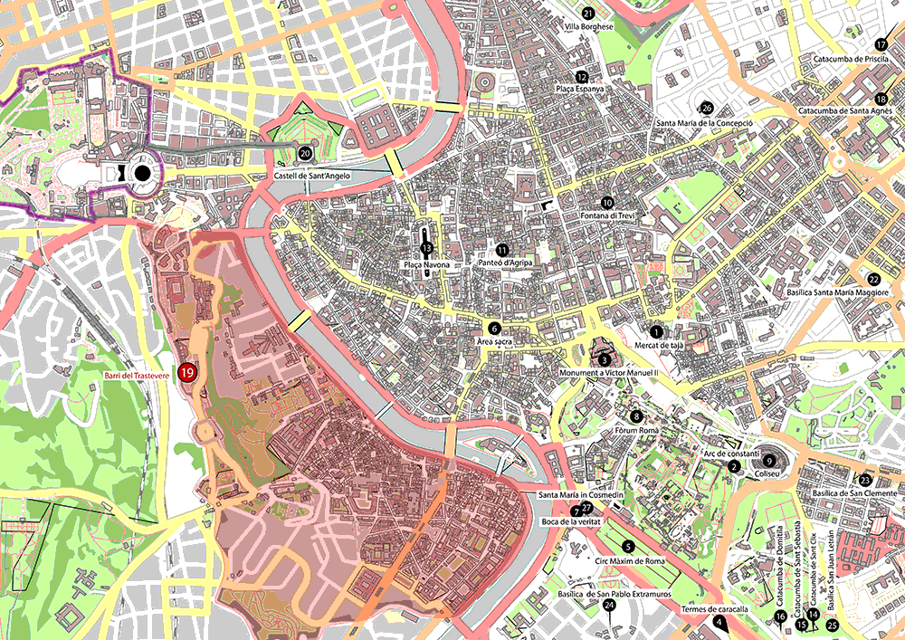
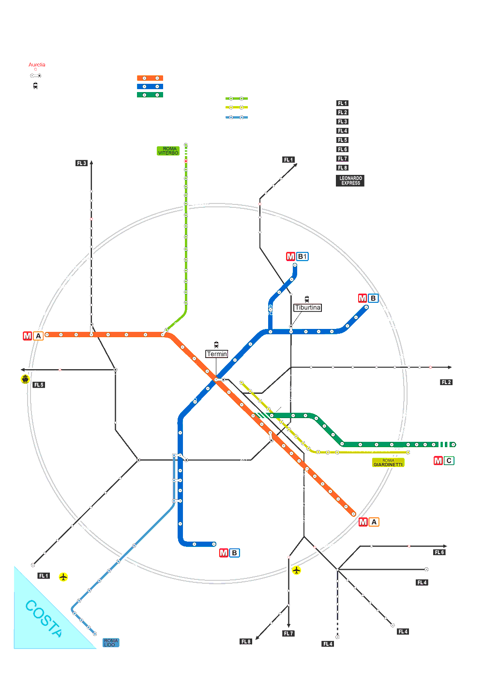

Tornar
Principal
Introducció
Història
Apartats ↓
Com Arribar
Tansports
Que veure
Esglèsies i basíliques
On menjar
Mapa
Vaticà
Mapa de Roma:

1. Mercat de tajà.
2. Arc de constantí.
3. Monument a Víctor Manuel II.
4. Termes de caracalla.
5. Circ Màxim de Roma.
6. Àrea sacra.
7. Boca de la veritat.
8. Fòrum Romà.
9. Coliseu.
10. Fontana di Trevi.
11. Panteó d’Agripa.
12. Plaça Espanya.
13. Plaça Navona.
14. Catacumba de Sant Clix.
15. Catacumba de Sant Sebastià.
16. Catacumba de Domitila.
17. Catacumba de Priscila.
18. Catacumba de Santa Agnès.
19. Barri del Trastevere.
20. Castell de Sant’Angelo.
21. Villa Borghese.
22. Basílica Santa María Maggiore.
23. Basílica de San Clemente.
24. Basílica de San Pablo Extramuros.
25. Basílica San Juan Letrán.
26. Santa María de la Concepció.
27. Santa María in Cosmedin.
Mapa del Metro:
